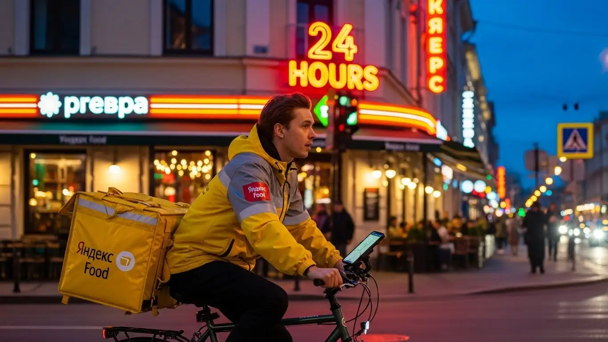
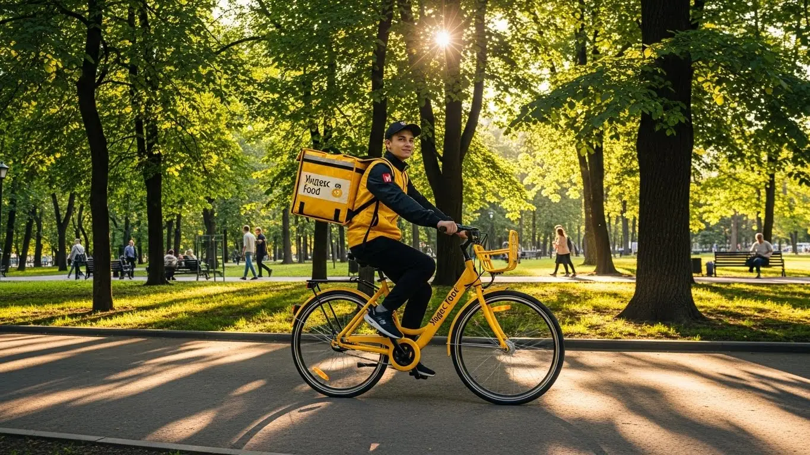
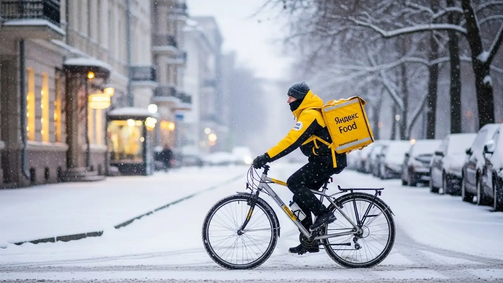
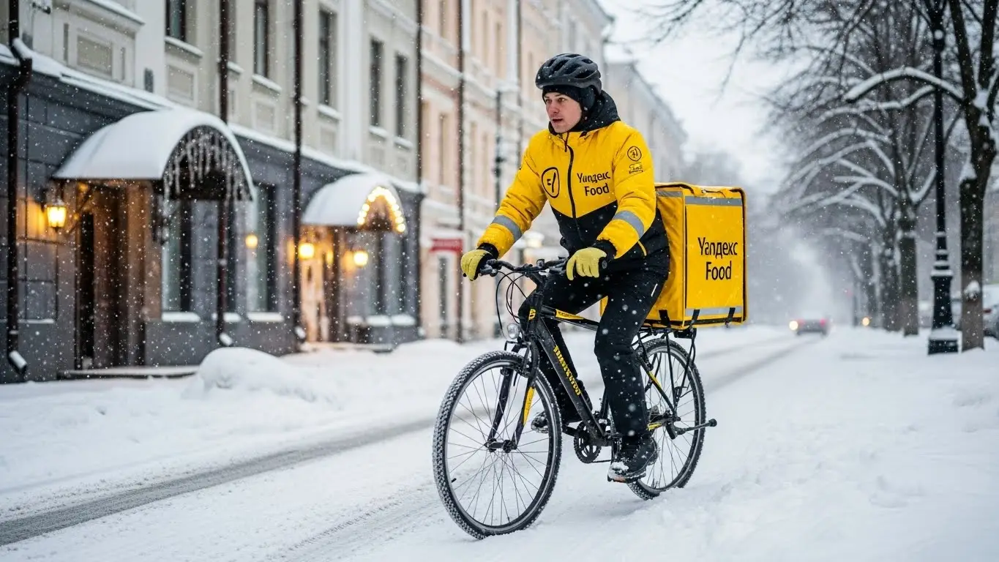

Реальный доход курьера Яндекс Еды в Кемерово в 2025-2026 году

- Работа курьером Яндекс Еды в Кемерово: кому подходит эта вакансия и что вы получите
- Сколько вы будете зарабатывать курьером в Кемерово: калькулятор дохода и разбор выплат
- Реальный заработок курьера в Кемерово: смены и месячный доход
- График работы и форматы занятости
- Требования к кандидату и документы
- Самозанятость, налоги и юридическая чистота
- Пошаговое оформление и первый выход на линию в Кемерово
- Пешком, на вело или на авто: что выгоднее в Кемерово
- Районы, маршруты и «топовые» зоны заказов в Кемерово
- Безопасность, страховка, штрафы и оплата простоя
- Плюсы и возможные минусы работы курьером в Кемерово
- Реальные истории и отзывы курьеров из Кемерово
- Ответы на главные вопросы о работе курьером Яндекс Еды в Кемерово
- Короткие ответы на главные вопросы
- Итоги и ваш следующий шаг
Все города
Думаешь, работа курьером в Кемерово — это просто? Взял сумку, включил приложение и гребёшь деньги лопатой? А как насчёт пробок на Ленина в час пик, когда заказ стынет, а клиент нервничает? Или доставки в Рудничный район в минус тридцать, когда телефон садится на глазах, а ты рискуешь остаться без связи и денег? Я здесь, чтобы рассказать, как на самом деле устроена работа курьером Яндекс Еды в Кемерово, без рекламной мишуры и пустых обещаний.
Поверь, 9 из 10 новичков в Кемерово наступают на одни и те же грабли. Они не считают реальные расходы на бензин или амортизацию велика, не понимают, почему в Центральном районе заказов валом, а на Южном можно просидеть час впустую. Не знают, как работает приоритет и почему одним сыплет дорогие заказы из ресторанов на Весенней, а другим — мелочь из «Подорожника» через весь город. В итоге — разочарование, убитый транспорт и миф о том, что «в Яндексе не заработать». Если ты хочешь заранее изучить все детали, то подробные условия, калькулятор дохода и форма для быстрой заявки есть на официальной странице партнёра — работа курьером Яндекс Еда в Кемерово.
В этом гиде мы всё разложим по полочкам. Мы честно посчитаем, сколько реально остаётся в кармане пешего, вело- и автокурьера в Кемерово после всех расходов. Разберём лучшие и худшие районы для работы, выясним, в какое время суток выходить на линию, чтобы сорвать куш. Я покажу на примерах, как кемеровская погода — от летнего зноя до сибирских морозов — влияет на доход. И, конечно, расскажу, как не нарваться на штрафы и что делать, если что-то пошло не так.
Меня зовут Алексей. Я сам откатал не одну тысячу километров с жёлтой сумкой по кемеровским проспектам, а сейчас у меня свой небольшой таксопарк-партнёр. Так что я знаю эту кухню с обеих сторон — и как курьер, и как партнёр, который видит всю статистику. Никакой рекламы, только мясо, только реальный опыт. Считай, что старший брат делится с тобой всеми фишками. Ну что, погнали? Сейчас всё объясню, и ты сам решишь, стоит ли игра свеч.
Чтобы тебе было проще сориентироваться, вот краткий гид по ключевым темам статьи.
Что ты точно узнаешь из этого разбора по Кемерово
В этой статье ты ТОЧНО узнаешь:
- Сколько на самом деле можно заработать в Кемерово за смену пешком, на велосипеде и на авто?
- В каких районах и в какое время суток выгоднее всего выходить на линию, чтобы ловить высокие коэффициенты?
- Как работает оплата простоя, если заказов мало, и что покрывает бесплатная страховка на смене?
- За что могут понизить рейтинг или заблокировать, и как новичку избежать типичных ошибок?
- Как за 15 минут оформить самозанятость и какие документы для этого понадобятся?
А если тебе некогда читать всю статью — переходи сразу к заключению, где ты найдёшь короткие ответы на все эти вопросы и указания, в каких разделах искать подробности.
А для начала — наглядная инфографика о том, как устроен доход курьера в Кемерово.
Работа курьером в Кемерово: ключевые цифры
Работа курьером Яндекс Еды в Кемерово: кому подходит эта вакансия и что вы получите
Кому подойдёт эта работа в Кемерово
Давай начистоту: работа курьером — это не карьера в Газпроме, но это честный и быстрый способ заработать. В Кемерово такие вакансии идеально подходят, если ты студент и ищешь подработку после пар, или если у тебя есть основная работа, но деньги нужны ещё вчера. Требования простые: не нужен диплом или резюме на десять листов — стать курьером можно вообще без опыта.
Главное — желание двигаться и наличие смартфона с приложением Яндекс Про. Это отличный вариант для тех, кому важен свободный график, чтобы самому решать, когда выходить на линию, а когда заниматься своими делами. Курьеры на своем авто тоже найдут здесь стабильный поток заказов от Яндекс Еды и Доставки, который часто выгоднее, чем просто таксовать. Ну и, конечно, это для всех, кто не любит ждать зарплату месяц — здесь выплаты приходят на карту хоть каждый день.
Главные преимущества для жителей районов Ленинского, Заводского, Рудничного
Одно из главных удобств работы в сервисах Яндекса — возможность доставлять заказы прямо у себя под боком. Тебе не нужно тратить час-полтора на дорогу до «офиса». Живёшь, например, в Ленинском районе — можешь брать заказы оттуда, доставляя по проспекту Химиков или Октябрьскому. Обитаешь в Заводском — твоя зона работы может быть вокруг Сибиряков-Гвардейцев и ближайших улиц.
То же самое касается и Рудничного района. Вместо того чтобы ехать через весь город в центр, ты просто выходишь из дома, включаешь приложение Яндекс Про и начинаешь работать. Это экономит не только время, но и деньги на проезд. Ты лучше знаешь свой район, все короткие пути и дворы, что даёт тебе преимущество в скорости доставки.
Краткое обещание по доходу и условиям
Если говорить о деньгах, то цифры заработка в Кемерово вполне реальные. При частичной занятости, выходя на 3–4 часа в день, можно спокойно делать 1500–2000 рублей. Если же работать полный день, то активные курьеры на авто зарабатывают и по 3500–4500 рублей за смену. В месяц при полной занятости доход может доходить до 70 000 – 85 000 рублей, особенно если работать в пиковые часы и выходные.
Ключевые условия работы просты: свободный график, который ты сам составляешь в приложении, и ежедневные выплаты на твою банковскую карту. Для этого нужно лишь оформить самозанятость — это делается онлайн за 10-15 минут и позволяет получать доход легально. Работа без опыта — это реальность: всему необходимому научат на коротком онлайн-инструктаже. После него ты получишь доступ к заказам и брендированную термосумку.
Из практики: у меня был парень, студент КемГУ, жил в общаге в Центральном районе. Он выходил на 3-4 часа каждый вечер после учёбы, чисто пешком по Советскому проспекту и окрестностям. За вечер спокойно делал по 1200-1500 рублей. Говорил, что на жизнь, развлечения и оплату общаги ему с головой хватало, и не нужно было у родителей деньги просить. Это к тому, что даже небольшая подработка даёт ощутимый результат.
В общем, работа курьером в Кемерово — это гибкий инструмент для заработка. Он подходит и для небольшой подработки, и для полноценного дохода, а главное — позволяет работать на своих условиях и рядом с домом. Мой совет: если нужны деньги и ты не боишься движения, просто попробуй. Ты ничего не теряешь, а первый заработок можешь получить уже на следующий день.
Сколько вы будете зарабатывать курьером в Кемерово: калькулятор дохода и разбор выплат
Из чего складывается доход курьера
Твой доход — это не фиксированная зарплата, а сумма нескольких составляющих. Важно понимать, как всё устроено, чтобы влиять на итоговую цифру. Во-первых, это оплата за выполнение заказа — базовая стоимость за то, что ты взял и отнёс посылку. Во-вторых, доплата за расстояние, которое ты проходишь или проезжаешь от ресторана до клиента.
Кроме этого, есть повышающие коэффициенты. В часы пик (обед, ужин), в плохую погоду или в районах с высоким спросом стоимость заказов умножается на определённый коэффициент. Ты видишь эти «горящие» зоны в приложении Яндекс Про. Также есть персональные бонусы за выполнение определённого числа заказов в день или неделю. Не стоит забывать и про чаевые — они полностью твои. И самое важное, что отличает сервис от многих других — это оплата простоя, если ты на плановом слоте, но заказов нет, и возможная компенсация проезда на общественном транспорте, если заказ очень дальний.
Как пользоваться калькулятором дохода
Чтобы прикинуть свой возможный заработок, не нужно гадать на кофейной гуще. На сайте есть специальный калькулятор. Пользоваться им просто: сначала выбираешь свой город — Кемерово. Затем указываешь, как планируешь доставлять: пешком, на велосипеде или на своём автомобиле.
Далее двигаешь ползунки: сколько часов в день и сколько дней в неделю ты готов работать. Например, 4 часа 5 дней в неделю как подработку или 8 часов 6 дней в неделю для полной занятости. На выходе калькулятор покажет тебе примерный диапазон твоего дохода за день и за месяц. Это, конечно, не стопроцентная гарантия, но очень близкий к реальности ориентир, от которого можно отталкиваться.
Прикинь свой примерный доход в Кемерово
8 ч.
5 дн.
Примерный доход в месяц:
Это примерный расчёт на основе средней ставки в Кемерово (~425 ₽/час). Реальный доход зависит от спроса, бонусов, чаевых и вашего графика.
Чтобы получить более точный расчёт и увидеть актуальные условия, загляни на страницу работа курьером Яндекс Еда в твоём городе — там есть и калькулятор, и ответы на вопросы, и форма для быстрой заявки.
Примеры расчёта для пешего, вело- и автокурьера в Кемерово
Давай на конкретных примерах, чтобы было понятнее.
- Пеший курьер. Если ты работаешь без авто, это отличный старт. Допустим, ты доставляешь в центре Кемерово, в районе ЦУМа и драмтеатра. Здесь много кафе и короткие расстояния. За 4-часовой слот в обеденное время (с 12:00 до 16:00) ты можешь выполнить 8–10 заказов. С учётом бонусов и возможных чаевых твой доход составит примерно 1400–1800 рублей.
- Курьер на велосипеде (велокурьер). Ты работаешь на велосипеде, курсируя между спальными районами, например, из Ленинского в Центральный. Ты быстрее пешего, поэтому берёшь заказы на большее расстояние. За 6-часовую смену в выходной день можно заработать 2500–3200 рублей, особенно если поймать пару зон с повышенным коэффициентом.
- Курьер на автомобиле. На своем авто ты можешь брать самые выгодные заказы: доставка по всему городу, в отдалённые районы вроде Кировского или даже в пригород. В дождливый вечер пятницы, работая 8 часов, с учётом всех надбавок и спроса, твой заработок может составить 4000–5500 рублей. Авто даёт максимальный доход, но не забывай про расходы на бензин.
| Параметр | Пеший курьер | Велокурьер | Водитель-курьер (на авто) |
|---|---|---|---|
| Средний доход в час | 350–450 ₽ | 450–600 ₽ | 500–750 ₽ (без учёта расходов) |
| Лучшие зоны в Кемерово | Центральный район (плотная застройка) | Ленинский, Заводский районы (быстрые маршруты) | Весь город, включая Кировский, Рудничный, пригород |
| Плюсы | Нет расходов на транспорт, полезная физ. нагрузка | Скорость, маневренность, экономия | Комфорт, большие заказы, максимальный доход |
| Минусы | Низкая скорость, зависимость от погоды | Нужен свой велосипед, зависимость от погоды | Расходы на топливо и обслуживание авто |
Кейс из моего парка: один из водителей, Сергей, раньше работал на велосипеде. Летом было неплохо, но с приходом сибирской зимы он понял, что так долго не протянет. Взял в кредит простенькую «Гранту» и пересел на авто. Его чистый доход, даже с учётом бензина и обслуживания, вырос почти в два раза. Он стал брать дорогие заказы на дальние расстояния, которые пешим и велокурьерам просто недоступны, и перестал зависеть от погоды.
Итог простой: твой заработок в Кемерово напрямую зависит от твоей мобильности и стратегии. Деньги складываются из многих частей, и на большинство из них ты можешь влиять. Мой совет новичку: начни с пеших прогулок по своему району, чтобы понять механику. Как только освоишься, пересаживайся на велосипед или авто, если есть возможность. Это прямой путь к увеличению дохода.
Реальный заработок курьера в Кемерово: смены и месячный доход
Давай сразу к главному вопросу: сколько реально можно заработать курьером в Кемерово? Ответ простой: по-разному. Твой доход — это не фиксированный оклад, а результат твоих действий: сколько часов ты на линии, на чём передвигаешься, в какое время и в каких районах работаешь. В этой работе нет начальника, который платит за просиживание штанов. Сколько набегал или наездил — столько и получил.
Цифры, которые я назову, — это реальный опыт, мой и моих парней, а не рекламные обещания. Это «грязный» доход, из которого потом нужно вычесть расходы на транспорт и налог для самозанятых. Но даже с учётом этого, деньги вполне достойные, особенно если подходить к работе с головой, а не просто кататься по городу в надежде на чудо.
Диапазон дохода для подработки и полной занятости
Если ты ищешь подработку на 2–4 часа в день, чтобы были деньги на карманные расходы или закрыть небольшой кредит, то в Кемерово есть отличные варианты. Такие условия работы позволяют легко совмещать доставку с учёбой или основной занятостью.
Конкретные цифры примерно такие. Пеший курьер или велокурьер за короткую смену в 3–4 часа может сделать 1000–1800 рублей, особенно если выйти в пиковое время. Курьер на автомобиле за то же время заработает больше, в районе 1500–2500 рублей, так как сможет брать более дорогие, дальние заказы. В месяц такая подработка приносит 20–40 тысяч рублей, не особо напрягаясь.
При полной занятости, когда ты работаешь по 8–10 часов в день, доход совсем другой. Пеший или велокурьер, который стабильно откатывает полные смены, в Кемерово зарабатывает 2500–4000 рублей в день. В месяц это выливается в 50 000–80 000 рублей. Водитель-курьер при полной загрузке может делать 3500–6000 рублей в день и больше, особенно в выходные. Его месячный доход может достигать 70 000–120 000 рублей. Конечно, из этой суммы нужно будет вычесть бензин, но и заказы на авто всегда дороже.
Как район, время суток и погода влияют на доход
Запомни три кита высокого заработка: место, время и погода. В Кемерово больше всего заказов Яндекс Еды концентрируется в Центральном и Ленинском районах — там полно офисов, кафе и ресторанов.
В обеденный перерыв (с 12:00 до 15:00) и вечером (с 18:00 до 21:00) карта в приложении «Яндекс Про» буквально горит фиолетовым цветом. Это зоны повышенного спроса с высокими коэффициентами, когда стоимость каждого заказа умножается, и твой доход растёт. Пятница и выходные — вообще золотое время для курьера.
Погода — твой лучший друг. Как только в городе начинается дождь, сильный снегопад или мороз под -25, люди сидят дома и заказывают еду. Количество заказов взлетает, коэффициенты тоже. Да, работать в таких условиях сложнее, но и платят за это в 1.5–2 раза больше. Плюс, клиенты в плохую погоду чаще оставляют хорошие чаевые, потому что ценят твой труд. Не бойся непогоды — используй её, чтобы заработать.

Советы по увеличению заработка от опытных курьеров
Чтобы не просто работать много, а зарабатывать больше, есть несколько хитростей. Во-первых, старайся брать плановые слоты в пиковые часы. Так у тебя будет приоритет в распределении заказов. Во-вторых, не гоняйся за одним заказом с высоким коэффициентом через весь город. Выгоднее работать в одной плотной зоне, например, в центре вокруг ТРЦ «Лапландия» или «Променад 3», и делать много коротких доставок. Меньше пробег — больше заказов в час.
Если ты работаешь курьером на своем авто, изучи спальные районы вроде Лесной Поляны или Южного. Там часто бывают дорогие заказы из гипермаркетов типа «Ленты» или «Метро», которые пеший курьер просто не унесёт. И не отказывайся от мультизаказов, когда приложение предлагает забрать еду сразу из нескольких ресторанов по пути. Это прямой способ увеличить свой часовой заработок. Главное — не путать пакеты и быть внимательным.
Практический кейс: Парень-студент на велосипеде решил подработать. В первый день вышел в понедельник в 15:00 в своём районе на ФПК. За 3 часа получил 4 заказа и заработал около 700 рублей. На следующий день он взял плановый слот с 18:00 до 22:00 в Центральном районе. Погода испортилась, пошёл снег. В итоге за 4 часа он выполнил 12 заказов, поймал высокий коэффициент и получил 300 рублей чаевыми. Его заработок за смену составил 2400 рублей. Разница очевидна.
В итоге, твой заработок в Кемерово напрямую зависит от твоего подхода. Можно работать от случая к случаю и получать немного, а можно выстроить стратегию, анализировать спрос и стабильно приносить домой хорошие деньги. Мой совет: начни с коротких смен в пиковые часы в центре, чтобы почувствовать ритм, а потом уже планируй полную занятость.
График работы и форматы занятости
Главный плюс этой работы — свобода. Ты сам себе начальник и сам решаешь, когда и сколько работать. Никто не будет стоять над душой и контролировать каждый шаг. Это идеальный вариант для тех, кто не хочет сидеть в офисе с 9 до 6 или кому нужны деньги, но нет возможности устроиться на стандартную работу. Форматов занятости по сути два: подработка в свободное время и полноценная работа на полный день.
Приложение «Яндекс Про» — твой главный инструмент. Через него ты выходишь на линию, получаешь заказы и видишь свой доход в реальном времени. Кстати, одно из главных преимуществ — это ежедневные выплаты: заработанные деньги можно выводить на карту хоть каждый день. Именно такая гибкость и возможность начать без опыта привлекают в доставку самых разных людей: от студентов до тех, кто ищет дополнительный источник дохода к основной зарплате.
Подработка после учёбы или основной работы
Совмещать доставку с чем-то ещё — проще простого. Вот пара реальных примеров из Кемерово. Есть студент из КузГТУ, живёт в общежитии в центре. Как велокурьер он выходит на смены после пар, обычно с 17:00 до 21:00. Катается по Центральному и Заводскому районам, развозит ужины из ресторанов. В месяц у него выходит 25–30 тысяч рублей, которых с лихвой хватает на жизнь и развлечения.
Другой пример — мужчина, который днём работает на заводе по сменному графику. В свои выходные и иногда по вечерам после смены он выходит на линию как водитель-курьер на своем авто. Берёт дальние заказы, возит продукты из гипермаркетов. Такая подработка приносит ему дополнительные 30–40 тысяч в месяц, которые он откладывает на отпуск с семьёй. В обоих случаях люди сами строят свой график, не подстраиваясь ни под кого.
Полная занятость: как выглядит типичный день курьера
Если ты решил сделать доставку своей основной работой, твой день будет более структурированным. Типичный день курьера на полной занятости в Кемерово выглядит примерно так. Выход на линию около 10–11 утра, когда начинаются первые заказы из магазинов и кафе. Утром работаешь в спокойном темпе, можно выбрать зону поближе к дому.
К 12 часам дня перемещаешься в центр, потому что начинается обеденный пик. До 15:00 работаешь в интенсивном режиме, практически без пауз. После обеда наступает небольшое затишье — можно спокойно перекусить, заправить машину или просто отдохнуть. Вечерний пик начинается около 18:00 и длится до 21:00–22:00. В это время основной поток заказов идёт в спальные районы: Ленинский, Рудничный, Кировский. За день выходит 8–10 часов на линии с перерывами.
Как планировать слоты и выходы через приложение «Яндекс Про»
В приложении «Яндекс Про» есть два режима работы: свободный выход и плановые слоты. Свободный выход — это когда ты в любой момент нажимаешь кнопку «На линию» и начинаешь получать заказы. Это максимум гибкости, но в часы низкого спроса заказов может быть мало.
Плановые слоты — это когда ты заранее бронируешь время и район, в котором будешь работать. Например, с 18:00 до 22:00 в Ленинском районе. Курьеры на плановых слотах получают приоритет при распределении заказов. Часто на такие слоты действует гарантия минимального дохода. Главное правило — если забронировал слот, выходи на линию вовремя с термокоробом и не уходи раньше. Систематические опоздания или отмены могут понизить твой рейтинг, а от него зависит доступ к самым выгодным заказам.
Практический кейс: Новичок на авто решил, что свободный график — это полная свобода, и выходил на линию хаотично. За неделю заработал всего 8 тысяч, при этом сжёг много бензина, катаясь по городу в поисках заказов. Я ему посоветовал попробовать плановые слоты. Он начал бронировать 4-часовые вечерние слоты в зонах с высоким спросом. В итоге за следующую неделю, работая то же количество часов, он заработал 15 тысяч, потому что получал заказы стабильно и почти не простаивал.
В общем, гибкость графика — это не миф. Но чтобы эта гибкость приносила хороший доход, её нужно правильно использовать. Анализируй карту спроса в приложении, сочетай свободные выходы с плановыми слотами и относись к этому как к настоящей работе, а не просто прогулке по городу. Тогда и результат будет соответствующий.
Требования к кандидату и документы
Многих новичков пугает, что для работы курьером нужны какие-то особые навыки или кипа бумаг. На деле всё гораздо проще. Тебе не понадобится диплом о высшем образовании или опыт работы в логистике. Главные требования — это ответственность, умение ориентироваться в городе и наличие смартфона. Всё остальное — дело техники и небольшого обучения.
Процесс оформления максимально упрощён, чтобы ты мог как можно быстрее выйти на линию и начать зарабатывать. Большинство моих ребят, которые сейчас работают в Кемерово, проходили все формальности за один-два дня. Например, был у меня парень, студент КемГУ, которому срочно нужна была подработка. Он переживал, что без опыта его никуда не возьмут. Мы с ним вечером сели, проверили все документы по списку, он заполнил анкету, а уже на следующий день после обеда выполнял свой первый заказ в Центральном районе.
В общем, основной барьер здесь — не в сложности требований, а в голове. Если ты готов работать и зарабатывать, то собрать нужные документы и пройти регистрацию — задача на один вечер. Главное — заранее всё подготовить, чтобы не тратить время потом. Проверь, что паспорт не просрочен, и найди свой ИНН — это уже половина дела.
Возраст, гражданство и базовые условия
Давай сразу по ключевым моментам, чтобы не было недопонимания. Первое и самое важное — возраст. Начать работать курьером в Яндекс Еде можно строго с 18 лет. Никаких исключений здесь нет, так как работа связана с материальной ответственностью и оформлением официального статуса.
Второе — гражданство. Сервис сотрудничает с гражданами Российской Федерации, а также стран, входящих в Евразийский экономический союз (ЕАЭС): Беларуси, Казахстана, Армении и Киргизии. Это стандартное требование для легальной работы. Что касается физической формы, то от тебя не ждут олимпийских рекордов. Если ты пеший курьер или велокурьер, будь готов к активному движению. В Кемерово есть районы с перепадами высот, особенно если доставлять из центра в сторону ФПК, так что выносливость пригодится. Для курьера на своем авто главное — уверенное вождение и знание города.
И, конечно, твой главный рабочий инструмент — смартфон. Он должен быть на платформе Android, с работающей камерой, GPS и стабильным доступом в интернет. Через него ты будешь получать заказы, строить маршруты и связываться с поддержкой через приложение «Яндекс Про».
Какие документы нужны для работы курьером
Чтобы всё было официально и без проблем, тебе понадобится небольшой, но важный пакет документов. Советую подготовить его заранее, чтобы процесс регистрации прошёл максимально быстро. Вот что нужно:
- Паспорт. Основной документ, удостоверяющий твою личность. Нужен для заключения договора и регистрации в сервисе. Для граждан стран ЕАЭС могут понадобиться дополнительные документы, например, нотариально заверенный перевод паспорта.
- ИНН (Идентификационный номер налогоплательщика). Этот номер необходим для оформления самозанятости и уплаты налогов. Если ты не помнишь свой ИНН или потерял свидетельство, его легко можно узнать на сайте Федеральной налоговой службы (ФНС) по паспортным данным.
- Личная банковская карта. Понадобится карта любого российского банка (МИР, Visa, Mastercard), оформленная на твоё имя. Именно на неё будут приходить все выплаты. Карта родственников или друзей не подойдёт.
- Медицинская книжка. Для доставок из ресторанов и кафе (основной профиль Яндекс Еды) она часто является обязательным требованием. Это гарантия того, что ты соблюдаешь санитарные нормы. Оформить её в Кемерово можно в любом аккредитованном медцентре, это вложение в твою работу, которое открывает доступ к большему числу заказов.
Этот список — твой пропуск к первым заказам. Как видишь, ничего сверхъестественного. Кроме этого, для работы понадобится термокороб, но его обычно выдают партнёры сервиса. В остальном это стандартный набор для любого официального сотрудничества.
Можно ли работать с 16 лет и какие есть альтернативы
Часто спрашивают, можно ли устроиться в Яндекс Еду, если тебе 16 или 17 лет. Отвечаю честно: нет, стать курьером сервиса можно только с 18 лет. Это связано с юридическими аспектами: работа предполагает полную материальную ответственность за дорогие заказы, а основной формат сотрудничества — самозанятость — в полной мере доступен именно с совершеннолетия.
Я понимаю желание подростков заработать свои первые деньги, и это очень похвально. Но правила есть правила. Не стоит пытаться их обойти, используя чужие документы — это быстро вскроется и приведёт к блокировке без возможности восстановления.
Какие есть альтернативы для ребят 16–17 лет в Кемерово? Варианты есть, хоть и не в доставке еды. Можно рассмотреть вакансии промоутера в торговых центрах, например, в «Лапландии» или «Променаде 3». Часто ищут ребят для раздачи листовок или помощи в организации мероприятий. Летом появляются сезонные вакансии в парках или через городские центры занятости для молодёжи. Такая подработка тоже даст хороший опыт и возможность заработать на карманные расходы, пока не исполнится 18.
Самозанятость, налоги и юридическая чистота
Многих пугают слова «самозанятость» и «налоги», кажется, что это что-то сложное и запутанное. На самом деле, это самый простой и прозрачный способ работать на себя и получать официальный доход. Забудь про «серые» зарплаты в конвертах и постоянные переживания. Статус самозанятого — это твоя юридическая чистота и финансовая безопасность.
У меня в таксопарке был водитель, лет под 50, который всю жизнь работал по «серым» схемам. Когда он решил попробовать себя в доставке, то от слова «самозанятость» его чуть ли не в дрожь бросало. Думал, что придётся нанимать бухгалтера и возиться с отчётами. Я ему прямо на его смартфоне показал приложение «Мой налог», и мы вместе прошли регистрацию за десять минут. Он был в шоке, насколько всё просто.
Теперь он спокойно работает автокурьером в Заводском районе. Весь его доход виден в приложении, налог списывается автоматически. Благодаря тому, что заработок официальный, он даже смог взять небольшой кредит на ремонт машины.
Самозанятость — это не усложнение, а наоборот, упрощение жизни. Ты работаешь легально, платишь минимальный налог и ни о чём не беспокоишься. Система всё делает за тебя, а ты просто концентрируешься на заказах и заработке.

Почему курьеры Яндекс Еды работают как самозанятые
Формат самозанятости (или, по-научному, налог на профессиональный доход — НПД) выбран не случайно. Это самая удобная форма сотрудничества и для курьера, и для сервиса. Ты не являешься наёмным работником в классическом понимании, а выступаешь как независимый партнёр. Это даёт тебе свободу, а сервису — гибкость.
Вот ключевые преимущества этого формата. Во-первых, это официальный доход. Все деньги, которые ты получаешь, — «белые». Это значит, ты можешь без проблем подтвердить свой заработок для банка, чтобы взять кредит, или для посольства, чтобы получить визу. Во-вторых, никакой сложной бухгалтерии. Тебе не нужно вести книги учёта, сдавать декларации и нанимать бухгалтера.
Приложение «Яндекс Про» автоматически формирует чеки по каждому доходу и передаёт данные в налоговую. Это и есть твоя отчётность — простая и понятная. В итоге ты работаешь абсолютно легально, но без лишней бюрократии, которая обычно сопровождает индивидуальных предпринимателей.
Как за 10 минут оформить самозанятость через «Мой налог»
Оформить статус самозанятого проще, чем зарегистрироваться в новой социальной сети. Весь процесс занимает от силы 10–15 минут и делается прямо с телефона. Вот пошаговая инструкция:
- Скачай приложение. Зайди в Google Play (или App Store, если регистрируешься с другого устройства) и найди официальное приложение ФНС России — «Мой налог».
- Начни регистрацию. Открой приложение и выбери самый простой способ — «Регистрация по паспорту РФ».
- Отсканируй паспорт. Наведи камеру телефона на главный разворот паспорта. Приложение само распознает все данные. После этого система попросит сделать селфи для подтверждения личности.
- Проверь и подтверди. Убедись, что все данные распознаны верно, и подтверди регистрацию. Нужно будет выбрать регион ведения деятельности — указывай «Кемеровская область».
- Готово! Через несколько минут придёт уведомление, что ты официально зарегистрирован в качестве плательщика налога на профессиональный доход.
Вот и всё. Никаких поездок в налоговую, никаких очередей и бумажной волокиты. Иногда регистрацию можно пройти и через приложения банков-партнёров или прямо в «Яндекс Про», что ещё удобнее.
Сколько и как платить налоги
Теперь о самом главном — о деньгах. Ставка налога для самозанятых — одна из самых низких в стране. Так как ты получаешь доход от юридического лица (Яндекса), твоя ставка составляет 6%. Если бы ты оказывал услуги физлицам, она была бы 4%, но в нашем случае работаем с 6%.
Процесс уплаты налога полностью автоматизирован и не требует от тебя никаких усилий. Вот как это работает: «Яндекс Про» фиксирует все твои доходы от выполненных заказов и передаёт эту информацию в ФНС. В начале следующего месяца (обычно до 12-го числа) в приложении «Мой налог» появляется квитанция с итоговой суммой налога за прошедший месяц. Оплатить её нужно до 28-го числа. Сделать это можно прямо в приложении, привязав банковскую карту, или любым другим удобным способом.
Это гораздо проще и безопаснее, чем работать неофициально и постоянно рисковать. Ты платишь небольшой, понятный процент и спишь спокойно. Кроме того, всем новым самозанятым государство даёт налоговый вычет (бонус) в размере 10 000 рублей, который на первое время снижает твою ставку, делая её ещё выгоднее.
Пошаговое оформление и первый выход на линию в Кемерово
Шаг 1–2: анкета и онлайн-обучение
Многие думают, что устроиться курьером — это долгая история с бумажками и собеседованиями. На деле всё гораздо проще и быстрее, особенно если нужна подработка без опыта. Первый шаг — короткая анкета на сайте. Там стандартные вопросы: ФИО, номер телефона, город (указываешь Кемерово), гражданство. Заполняется всё минут за 10, не больше. Никаких резюме и рассказов о себе не требуется.
После отправки анкеты твои данные проходят быструю проверку, обычно это занимает от 15 минут до пары часов. Затем на телефон приходит ссылка на короткое онлайн-обучение. Это не нудные лекции, а несколько видеороликов о стандартах сервиса Яндекс Доставки, правилах безопасности и о том, как пользоваться приложением «Яндекс Про».
В конце будет небольшой тест из нескольких вопросов, чтобы убедиться, что ты всё понял. Это не экзамен, а просто проверка на внимательность, так что не переживай.
Шаг 3: получение сумки и доступа к заказам в Кемерово
Как только ты прошёл обучение и тест, следующий этап — получить главный рабочий инструмент, термосумку. Без неё система не даст тебе доступ к заказам Яндекс Еды из ресторанов и магазинов. В Кемерово экипировку обычно выдают в офисах партнёров сервиса. Не нужно самому искать адреса — после обучения в приложении «Яндекс Про» появится карта с доступными точками и их графиком работы.
Просто выбираешь ближайший к тебе офис, приезжаешь в рабочее время, и тебе выдают фирменную жёлтую или другую брендированную сумку. Иногда бывает возможность заказать доставку экипировки на дом. Как только термокороб у тебя на руках, ты фотографируешь его и активируешь в приложении. С этого момента ты полноправный курьер, и тебе открывается доступ к заказам по всему городу.
Шаг 4: первый слот и первый доход
Получил сумку? Отлично, можно зарабатывать первые деньги. Заходишь в «Яндекс Про», открываешь расписание и выбираешь свой первый слот — это твой рабочий интервал в рамках свободного графика. Мой совет: для начала возьми короткий слот на 3–4 часа и выбери свой район, где ты знаешь каждую улицу и каждый двор. Так будет спокойнее, не придётся плутать и нервничать.
Как только твой слот начинается, ты нажимаешь кнопку «На линию» — и всё, ты в системе. Приложение начнёт предлагать тебе первые заказы. Принял, забрал, отвёз, получил оплату на баланс. Весь процесс от заполнения анкеты до первого заработка может занять всего один день. Заполнил анкету утром, днём забрал сумку — вечером уже можешь привезти домой первые заработанные деньги, ведь одно из преимуществ — это ежедневные выплаты.
Из практики: парень из Ленинского района у нас решил попробовать. В 10 утра заполнил анкету, пока пил кофе. К обеду прошёл обучение. После обеда съездил в партнёрский офис на проспекте Ленина, забрал короб. Вечером вышел на 4-часовой слот в своём же районе, чтобы освоиться. Спокойно выполнил 6 заказов и заработал первые 1100 рублей. Говорит, не ожидал, что всё так быстро и просто.
В итоге, весь процесс трудоустройства максимально упрощён и занимает минимум времени. Четыре шага: анкета, быстрое обучение, получение сумки и выбор первого слота — и ты уже зарабатываешь. Главный совет новичку: не бери на первый раз 12-часовой слот в незнакомом районе. Начни с малого, освойся, и тогда работа будет в удовольствие, а не в стресс.
Пешком, на вело или на авто: что выгоднее в Кемерово
Пеший курьер: для центра и плотной застройки в Кемерово
Работа пешком — отличный вариант, если ты живёшь в центре или рядом с ним. В центральной части Кемерово, особенно в квадрате улиц Советский проспект – Весенняя – Ноградская, очень плотная застройка. Здесь куча кафе, ресторанов и магазинов, а расстояния между точками А и Б часто небольшие, буквально 500–700 метров. На машине тут только в пробках стоять и парковку искать, а пешком ты быстро срежешь путь через дворы и скверы.
Этот формат идеален для студентов или тех, кому нужна подработка без вложений. Тебе не нужно тратиться на бензин или обслуживание транспорта. Основные зоны работы — это районы вокруг ТРЦ «Променад» или ЦУМа, где всегда много заказов Яндекс Еды на короткие дистанции. Да, много не унесёшь, но для доставки еды или небольших посылок — самое то. Плюс это, по сути, оплачиваемая прогулка на свежем воздухе.
Велокурьер: быстрые доставки между спальными районами
Велосипед даёт тебе скорость и манёвренность. Ты уже не зависишь от пробок, но при этом покрываешь гораздо большие расстояния, чем пеший курьер. В Кемерово это особенно выгодно для работы в крупных спальных районах, таких как Ленинский или Заводский. На велосипеде можно быстро перемещаться между проспектом Ленина и Октябрьским, срезая путь через парки, например, Парк «Антошка» или бульвар Строителей.
Как велокурьер, ты находишь золотую середину. Зарабатываешь больше пешего за счёт скорости и количества выполненных заказов, но при этом у тебя нет расходов на топливо, как у водителя. Многие ребята называют это «оплачиваемым фитнесом»: и деньги в кармане, и форма в порядке. Главное — иметь выносливость и быть готовым крутить педали в любую погоду, хотя в сильный снегопад, конечно, будет тяжело.
Водитель-курьер: заказы по всему городу и пригороду Кедровка, Ягуновский
Работа курьером на своем авто — это твой пропуск к самым дорогим и дальним заказам. Тебе доступны доставки по всему Кемерово: из центра в Рудничный район, из Кировского в Лесную Поляну. Особенно выгодно работать на машине в плохую погоду — дождь, метель, мороз. В такие дни количество заказов резко растёт, включаются повышенные коэффициенты, а пеших и велокурьеров на линии становится меньше.
Кроме того, автомобиль незаменим для работы с пригородами, такими как Кедровка, Промышленновский или Ягуновский, куда другим способом добираться долго и неудобно. На авто ты можешь брать крупные заказы из гипермаркетов, доставлять посылки Яндекс Доставки или товары из Яндекс Маркета между разными концами города и работать в часы пик, когда спрос максимальный. Да, есть расходы на бензин и амортизацию, но высокий доход с лихвой их перекрывает.
Сравнение форматов доставки в Кемерово
| Параметр | Пеший курьер | Велокурьер | Водитель-курьер |
|---|---|---|---|
| Средний доход | Базовый | Средний | Высокий |
| Лучшие зоны работы | Центральный район, зоны у ТРЦ | Ленинский, Заводский районы, спальные кварталы | Весь город, включая пригороды (Кедровка, Лесная Поляна) |
| Плюсы | Нет расходов на транспорт, полезно для здоровья, легко начать | Скорость, манёвренность, экономия на пробках, «оплачиваемый фитнес» | Дальние и дорогие заказы, комфорт в плохую погоду, возможность брать большие посылки |
| Минусы / Расходы | Низкая скорость, ограниченный радиус, физическая усталость | Зависимость от погоды, нужна физ. подготовка, обслуживание велосипеда | Расходы на бензин, амортизация авто, проблемы с парковкой в центре |
Один из моих водителей, Сергей, сначала работал только в центре. Жаловался, что заказов много, но они дешёвые, а с парковкой беда. Я посоветовал ему сместить фокус на дальние районы и плохую погоду. В первый же сильный снегопад он включил приложение и стал брать заказы из центра в Рудничный и Кировский районы. За вечер сделал 8 дальних доставок с высоким коэффициентом и заработал около 4500 рублей, что было почти вдвое больше его обычной смены.
В общем, выбор формата зависит от твоих целей и возможностей. Пеший курьер — для старта и подработки в центре. Велосипед — для скорости и экономии в спальниках. Работа на авто — для максимального заработка по всему городу и в любую погоду. Мой совет: если есть и велосипед, и машина, комбинируй. В ясный день катайся на велике по своему району, а как только погода испортится — пересаживайся за руль и лови самые «жирные» заказы.

Районы, маршруты и «топовые» зоны заказов в Кемерово
Чтобы работа курьером в Яндекс Еда приносила хороший доход, а не только усталость, нужно понимать, где и когда эти деньги зарабатываются. Просто кататься по городу в надежде на удачу — прямой путь к пустому баку и разочарованию. В Кемерово, как и в любом другом городе, есть свои «рыбные места» и часы пик. Твоя главная задача — научиться читать карту спроса в приложении «Яндекс Про» и быть там, где ты нужен больше всего.
Где больше всего заказов: ТРЦ, бизнес-центры и туристические места
Самые выгодные зоны с повышенными коэффициентами — это места, где люди отдыхают и работают. Во-первых, крупные торговые центры. В Кемерово это, прежде всего, ТРЦ «Лапландия» на Октябрьском проспекте и ТРК «Променад 3» на проспекте Ленина. Здесь сосредоточены десятки ресторанов и фуд-кортов, поэтому заказы оттуда идут потоком, особенно в обеденное время (с 12:00 до 15:00) и по вечерам в выходные.
Во-вторых, деловые кварталы. Центр города, особенно район Советского проспекта и улицы Ноградской, — это офисы. С утра до вечера оттуда заказывают обеды, кофе и документы. Пик приходится на будни с 11:00 до 14:00. Летом и в тёплые выходные хорошо «стреляют» зоны отдыха — набережная Томи, Парк Чудес. Люди гуляют и заказывают еду прямо на место. В таких зонах на карте в «Яндекс Про» часто появляются фиолетовые отметки — это сигнал о высоком спросе и повышенной оплате за доставку.
Работа в своём районе: примеры для популярных жилых кварталов
Не обязательно каждый день мотаться в центр, чтобы хорошо зарабатывать. Работа курьером в своём районе — это отличная стратегия, особенно если это подработка и ты хорошо знаешь местность. Ты экономишь время и топливо, знаешь все дворы и короткие пути, что напрямую влияет на скорость доставки и, как следствие, на заработок.
Например, в Ленинском районе, особенно в микрорайонах «Южный» и «Радуга», огромная плотность многоэтажек. Вечером и в выходные оттуда идёт шквал заказов из продуктовых магазинов, пиццерий и суши-баров. Похожая ситуация в Заводском районе — там всегда стабильный спрос на доставку. А если ты живёшь в «Лесной Поляне», то это вообще золотая жила: район новый, жители активно пользуются доставкой, а средний чек заказа там часто выше, что увеличивает шансы на хорошие чаевые.
Как выбирать зоны и слоты в «Яндекс Про», чтобы не мотаться впустую
Приложение «Яндекс Про» — твой главный инструмент для планирования. Основное правило — следи за картой спроса. Зоны, подсвеченные разными оттенками от жёлтого до фиолетового, показывают, где заказов больше всего и где действуют повышающие коэффициенты. Если ты находишься в «зелёной» зоне, а в паре километров от тебя всё «горит» фиолетовым, есть смысл сместиться туда.
Планируй своё время заранее. Самые выгодные — это плановые слоты. Ты заранее бронируешь время и зону, где будешь работать. Вечерние слоты (примерно с 18:00 до 22:00) и слоты на выходные разбирают быстро, потому что в это время больше всего заказов. Кроме того, работая на плановом слоте, ты получаешь приоритет в распределении заказов и гарантию минимального дохода, даже если заказов будет мало. Чтобы не было простоев, старайся работать так, чтобы система включала тебе «цепочку заказов» — это когда новый заказ назначается ещё до того, как ты завершил текущий.
Один мой знакомый водитель-курьер на старенькой «Гранте» поначалу жаловался, что много жжёт бензина, а выхлоп маленький. Он просто брал первый попавшийся заказ и летел через весь город с Южного в Кировский, а оттуда на Радугу. Поговорили с ним, и он поменял тактику. Стал брать утренние слоты в центре, крутился возле бизнес-центров до обеда, а вечерний слот брал уже в своём Ленинском районе. В итоге пробег за 8-часовую смену сократился почти на треть, а чистый доход вырос с 2500–3000 до 4000–4500 рублей. Просто за счёт того, что перестал делать лишние движения.
В общем, чтобы не работать впустую, нужно думать головой и использовать инструменты, которые даёт сервис. Анализируй карту, планируй слоты в пиковые часы и не бойся работать в плотной застройке своего района — часто это выгоднее, чем гоняться за одним дорогим заказом на другом конце Кемерово. Мой совет: первые пару недель попробуй поработать в разных районах в разное время, чтобы нащупать свой ритм и самые доходные места.
Безопасность, страховка, штрафы и оплата простоя
Работа курьером — это не только про деньги и свободный график, но и про ответственность. Ты постоянно в движении, на дороге, общаешься с разными людьми. Поэтому важно понимать, как защитить себя, свой доход и какие условия работы нужно соблюдать, чтобы всё было в радость, а не в тягость. Сервис со своей стороны даёт неплохую подушку безопасности, но и от тебя требуется аккуратность.
Бесплатная страховка на сменах и что она покрывает
Это один из самых важных моментов, о котором многие новички даже не знают. Когда ты выходишь на плановый слот и выполняешь заказ от сервиса «Яндекс Еда», твоя жизнь и здоровье застрахованы. Это бесплатное страхование для тебя, всё покрывает компания. Страховка действует с момента принятия заказа и до его завершения.
Что это значит на практике? Если, не дай бог, ты попал в ДТП на машине, упал с велосипеда и получил травму или поскользнулся зимой и что-то сломал, ты можешь рассчитывать на страховую выплату. Суммы покрытия серьёзные, до 2 миллионов рублей. Это реальная помощь, которая показывает, что в сложной ситуации тебя не бросят одного. Главное — сразу сообщить о случившемся в службу поддержки через «Яндекс Про» и следовать их инструкциям.
Правила безопасности на дороге и при доставке
Банальные вещи, но именно они спасают здоровье и деньги. Если ты пеший курьер или велокурьер, твои главные враги — невнимательность и спешка. Вытащи наушники из ушей, когда переходишь дорогу, особенно во дворах, откуда внезапно может выехать машина. В тёмное время суток обязательно используй фонари и светоотражающие элементы.
Для водителей-курьеров в Кемерово главное правило — не гонять, особенно зимой. Сэкономишь минуту, а потерять можешь гораздо больше. Паркуйся по правилам, даже если до клиента придётся пройти лишние 50 метров. Штраф за неправильную парковку съест твой заработок за несколько часов. И всегда будь аккуратен с самим заказом: надёжно закрепи его в машине, чтобы ничего не пролилось и не помялось. Клиент ждёт горячую пиццу, а не месиво в коробке.
Какие бывают штрафы и как их избежать
Да, в системе есть штрафы, или, как их ещё называют, корректировки. Но их цель — не отобрать у тебя деньги, а поддерживать качество сервиса на высоком уровне. Никто не будет штрафовать за опоздание на 5 минут из-за пробки, если ты предупредил поддержку. Наказывают за системные и грубые нарушения.
Основные причины штрафов: грубость клиенту или сотруднику ресторана, порча заказа по своей вине, регулярные сильные опоздания без уважительной причины, невыход на забронированный слот без своевременной отмены. Избежать этого проще простого: будь вежлив, аккуратен и ответственен. Если понимаешь, что не успеваешь на слот, отмени его в приложении заранее. Если что-то случилось с заказом — сразу пиши в поддержку. Честность и профессионализм — лучшая защита от любых штрафов и понижения рейтинга.
Что такое оплата простоя и как она защищает ваш доход
Это ключевое преимущество, которое даёт уверенность в завтрашнем дне. «Оплата простоя» — это гарантия минимального дохода в час, когда ты находишься на плановом слоте в указанной зоне, но заказов по какой-то причине мало или нет совсем. Ты не сидишь бесплатно в ожидании, твоё время оплачивается.
Работает это так: у каждого слота есть минимальная гарантированная ставка в час. Если за час ты выполнил заказы на сумму меньше этой ставки, сервис доплатит тебе разницу. Например, гарантия — 200 рублей в час. Ты за этот час выполнил один заказ на 120 рублей. В конце смены система увидит это и доначислит тебе 80 рублей. Это страхует от ситуаций, когда ты вышел на линию, а город «спит». Такая система есть далеко не во всех сервисах доставки, и это огромный плюс для стабильного заработка.
Как-то раз один из моих водителей, новичок, взял слот в понедельник днём, в не самое пиковое время. За два часа ему упал всего один заказ на 180 рублей. Он уже начал психовать, звонить мне, мол, что за работа такая. Я ему сказал: «Спокойно, доработай слот и посмотри итог». Вечером он увидел в отчёте, что сервис доплатил ему до гарантированной суммы за эти два часа. Вопросы сразу отпали. Он понял, что его время ценят, даже когда нет шквала заказов.
Итак, твоя работа курьером защищена с нескольких сторон: бесплатная страховка на случай ЧП, понятные правила, которые уберегут от штрафов, и оплата простоя, которая гарантирует доход. Главное — подходить к делу ответственно. Мой совет: всегда выходи на линию через плановые слоты. Так ты будешь под защитой страховки и финансовых гарантий, что делает работу гораздо спокойнее и предсказуемее.
Плюсы и возможные минусы работы курьером в Кемерово
Любая работа — это не только деньги, но и свои особенности. Работа в доставке — не исключение. Здесь нет начальника, который стоит над душой, но есть ответственность и свои вызовы. Давай честно разберём, что тебя ждёт на улицах Кемерово, чтобы ты понимал, куда идёшь.
Сильные стороны работы курьером в Кемерово
Начну с того, почему многие считают эту занятость одной из лучших для старта или подработки. Во-первых, это гибкий график. Ты сам решаешь, когда выходить на линию — можно отработать пару часов после учёбы или основной работы, а можно взять полную смену на выходных. Никто не заставит тебя работать с 9 до 6, всё планируется через приложение «Яндекс Про».
Во-вторых, ежедневные выплаты. Это огромный плюс. Заработал сегодня — получил деньги на карту в тот же или на следующий день. Не нужно ждать зарплаты месяц, можно сразу покрывать свои расходы. Кроме того, ты можешь работать рядом с домом. Живёшь в Ленинском районе или на ФПК — выбираешь эту зону и доставляешь заказы в знакомых кварталах, не тратя время и деньги на дорогу через весь город. Наконец, ты не остаёшься один: есть круглосуточная поддержка и бесплатная страховка на время смены. А оформление через самозанятость — это официальный доход, который легко подтвердить. Плюс, налог для самозанятых простой и платится в пару кликов.
С какими сложностями чаще всего сталкиваются курьеры
Теперь о другой стороне медали. Будем реалистами: работа на ногах, особенно для пешего курьера или велокурьера, — это физическая нагрузка. Если ты не привык много ходить или крутить педали, первое время мышцы будут гудеть. Но со временем втягиваешься, и это превращается в оплачиваемый фитнес. Вторая сложность, особенно актуальная для Кемерово, — погода. Сибирская зима со снегопадами и морозами, дождливая осень — всё это часть работы. Главное — правильно одеваться: термобельё, непромокаемая обувь и перчатки решают 90% проблем. Зато в плохую погоду всегда повышенные коэффициенты и больше чаевых.
Иногда случаются простои, когда заказов меньше, чем обычно. Это бывает в определённые часы, например, после обеда в будний день. Но здесь сервис подстраховывает минимальной оплатой за час в определённых зонах, так что совсем без денег ты не останешься. Ну и, конечно, общение с разными клиентами. Большинство людей адекватны, но изредка попадаются и недовольные. Мой совет: сохраняй спокойствие, будь вежлив и в любой непонятной ситуации пиши в поддержку — они помогут разрулить конфликт.
Кому такая работа подходит, а кому лучше поискать другой формат
Давай по-честному. Эта работа идеально подходит, если ты:
- Студент и ищешь подработку, которую легко совмещать с парами.
- Имеешь основную работу, но хочешь дополнительный доход по вечерам или выходным.
- Активный человек, который не любит сидеть на месте и готов много двигаться.
- Владелец авто, велосипеда или самоката и хочешь, чтобы твой транспорт приносил деньги.
- Ищешь работу без опыта, куда можно быстро устроиться и сразу начать зарабатывать.
С другой стороны, тебе лучше поискать что-то другое, если ты:
- Категорически не переносишь холод, дождь и физические нагрузки.
- Предпочитаешь работать в тишине и одиночестве, а общение с незнакомыми людьми вызывает стресс.
- Ищешь стабильный оклад, который не зависит от количества выполненных заказов.
- Не готов к самостоятельному планированию своего времени и отсутствию прямого начальника.
Из моей практики: был у меня парень, начинал пешим курьером в Заводском районе зимой. Первую неделю мёрз, психовал, хотел всё бросить. Потом я ему посоветовал купить нормальные термос и термобельё, показал, в какие часы лучше выходить, чтобы ловить пиковый спрос от офисов. Он втянулся, а через пару месяцев подкопил и пересел на старенькую машину. Теперь работает автокурьером, и погода ему не страшна, а доход вырос в полтора раза.
В общем, работа курьером в Яндекс Еде — это свобода и быстрые деньги, но требует самодисциплины и готовности к физической работе. Если ты понимаешь эти условия и они тебя устраивают, то сможешь хорошо зарабатывать. Главное — трезво оцени свои силы и не жди, что деньги будут падать с неба без усилий.
Реальные истории и отзывы курьеров из Кемерово
Теория — это хорошо, но лучше всего о работе говорят реальные люди, которые каждый день выходят на линию в Кемерово. Я собрал несколько коротких историй от кемеровских курьеров, чтобы ты увидел картину с разных сторон.
История студента КемГУ, который совмещает учёбу и доставку
«Меня зовут Кирилл, мне 20 лет, учусь в КемГУ на истфаке. Живу в общежитии в Центральном районе, поэтому работаю в основном здесь же. График у меня простой: выхожу на 3–4 часа после пар, примерно с 17:00 до 21:00, плюс беру одну полную смену на 8 часов в субботу. Катаюсь на велосипеде — для центра это идеальный вариант, пробки не страшны.
В основном вожу заказы Яндекс Еды из кафе и ресторанов на проспекте Советском и улице Весенней. Заказов много, расстояния небольшие. Такая подработка приносит мне 8–10 тысяч рублей в неделю. Этих денег с головой хватает на личные расходы, чтобы не просить у родителей. Главный плюс для меня — я сам строю свой график и не пропускаю учёбу. Привыкнуть пришлось только к одному — всегда проверять адрес в 2ГИС, потому что в центре много дворов-колодцев, где с навигацией можно запутаться».
Опыт автокурьера, который выходит в пиковые часы
«Я — Виктор, 40 лет. У меня есть основная работа со сменным графиком, а доставка на своем авто — это стабильная подработка. Я не катаюсь целый день, это невыгодно. Моя стратегия — выходить только в часы пик, когда действуют самые высокие коэффициенты: с 12:00 до 14:00 на обедах и с 18:00 до 22:00 на ужинах. Плюс обязательно работаю в выходные и праздники.
На машине я не привязан к одному району. Часто беру крупные заказы Яндекс Доставки из гипермаркетов вроде „Ленты“ на Кузнецком или „Метро“ и везу их в спальные районы — на Южный, в Лесную Поляну. Там и чеки больше, и чаевые чаще оставляют. Такой формат меня полностью устраивает: за 3–4 часа в „жирное“ время я зарабатываю столько же, сколько пеший курьер за 6–7 часов. Машина даёт комфорт и возможность брать дорогие заказы на дальние расстояния».
Мнение пешего и велокурьера о работе в центре и спальниках
«Аня, 23 года, работаю пешим курьером в Яндекс Еде. Пробовала разные зоны и могу сказать, что у центра и спальных районов своя специфика. В центре, особенно в районе „Променада“ или ЦУМа, заказы от ресторанов и магазинов сыплются один за другим. Дистанции короткие, можно сделать много доставок в час. Но есть и минусы: вечная проблема с парковкой у клиентов, суета, иногда сложно найти нужный офис в большом бизнес-центре.
А вот на ФПК или в Кировском районе работать спокойнее. Заказы идут не так плотно, но зато нет толп, клиенты в основном по домам, всё знакомо. Можно спокойно дойти до нужного подъезда, не торопясь. Мне нравится чередовать: в будни работаю в своём спальном районе, а на выходных, когда в центре много людей и заказов, выхожу туда. Привыкнуть пришлось к тому, что нужно постоянно следить за зарядом телефона и пауэрбанком — без них ты как без рук».
Как видишь, у каждого свой подход и своя стратегия. Кто-то берёт гибкостью и совмещением с учёбой, кто-то — работой на авто в самые выгодные часы, а кто-то находит баланс между разными районами. Главный вывод: в Кемерово можно найти такой формат работы курьером, который подойдёт именно под твои цели и образ жизни. Мой совет новичку — не бойся экспериментировать. Поработай в разных районах и в разное время, чтобы понять, какие условия работы для тебя комфортнее и где выше доход.
Ответы на главные вопросы о работе курьером Яндекс Еды в Кемерово
Собрал здесь ответы на те вопросы, которые мне задают чаще всего. Без воды, только по делу, чтобы у тебя сложилась полная картина, что к чему в Кемерово, будь то поиск основной работы или подработки.
Ответы на ключевые вопросы кандидатов
Нужно ли оформлять самозанятость и как платить налоги?
Да, обязательно. Работа курьером в Яндекс Еде — это официальная деятельность, поэтому нужен статус самозанятого (НПД). Не пугайся, это не сложнее, чем заказать пиццу. Скачиваешь приложение «Мой налог», регистрируешься по паспорту за 10 минут, и всё. Налог — 6% с дохода, который приходит от Яндекса. Никаких деклараций и походов в налоговую, всё считается и списывается автоматически. Это твоя гарантия официального дохода и отсутствия проблем с законом.
Какой телефон и интернет нужны для работы курьером?
Нужен смартфон на базе Android, потому что рабочее приложение «Яндекс Про» работает только на этой системе. На айфонах, увы, не запустится. Убедись, что на телефоне стабильно работает GPS и держит батарея. Мой тебе совет: сразу купи пауэрбанк. Приложение и навигатор съедают заряд очень быстро, особенно на морозе, а остаться без связи посреди смены — худшее, что может случиться. Интернет должен быть стабильным, без него ты просто не получишь заказы.
Что будет, если в смену мало заказов — как работает оплата простоя?
Это одно из главных преимуществ Яндекса. Если ты вышел на запланированный слот (смену), а заказов мало, тебе всё равно начислят минимальную почасовую оплату. Это называется «гарантия дохода» или «оплата простоя». То есть ты не будешь сидеть бесплатно в ожидании заказа. Система видит, что ты на линии и готов работать, и компенсирует время. Это страховка твоего заработка, которая делает доход более стабильным и предсказуемым.
Есть ли в Яндекс Еде штрафы и за что их могут применить?
Прямого понятия «штраф» в системе нет, но есть санкции, которые влияют на твой рейтинг и, соответственно, на доход. Снизить приоритет в получении заказов или временно заблокировать могут за серьёзные нарушения: опоздание на слот больше чем на 15 минут, порчу заказа, грубость клиенту или сотруднику ресторана, отмену уже принятого заказа без веской причины. Если работать по стандартам, с которыми тебя познакомят на обучении, то никаких проблем не будет. Главное в работе курьером Яндекс Еды — ответственность, а не страх штрафов.
Нужно ли покупать термокороб и где его взять?
Нет, покупать самому ничего не нужно. Фирменный термокороб или сумку тебе выдаст партнёр сервиса в Кемерово после того, как пройдёшь обучение. Иногда его дают бесплатно, иногда в аренду за символическую плату. Можно использовать и свой, если он подходит по размерам и держит температуру, но проще и надёжнее взять брендированный.
Сколько реально можно заработать курьером в Кемерово и чем эта вакансия лучше других сервисов?
В Кемерово реальный заработок курьера на своем авто при полной занятости — 3500–4500 рублей за смену. Пешие курьеры и велокурьеры могут рассчитывать на 2000–3000 рублей. В итоге, зарплата в месяц при графике 5/2 может достигать 70–80 тысяч рублей и выше. Главное отличие от конкурентов — это экосистема Яндекса. Заказов много не только из ресторанов (Яндекс Еда), но и из магазинов (Яндекс Маркет), дарксторов (Яндекс Лавка) и по тарифу Яндекс Доставки. Плюс, как я уже говорил, есть оплата простоя и бесплатная страховка жизни и здоровья на сменах. Технологичное приложение «Яндекс Про» само строит маршруты и предлагает выгодные заказы, что экономит твоё время и нервы.
Можно ли работать без опыта и что будет на обучении?
Конечно, для этой работы опыт не требуется. Большинство ребят начинают работать курьером без опыта, с нуля. Перед выходом на линию ты пройдёшь короткое онлайн-обучение. Это несколько видеороликов и небольшой тест. Там тебе расскажут, как пользоваться приложением «Яндекс Про», как правильно общаться с клиентами и ресторанами, что делать в нестандартных ситуациях. Всё просто и понятно, занимает от силы час. Главное — твоё желание работать и зарабатывать.
Берут ли с 16–17 лет и какие есть ограничения по возрасту?
Нет, по условиям работы в Яндекс Еде, стать курьером можно строго с 18 лет. Это связано с материальной ответственностью и юридическими аспектами оформления самозанятости. Для работы потребуется паспорт гражданина РФ или одной из стран ЕАЭС (Беларусь, Казахстан, Армения, Кыргызстан), а также ИНН и СНИЛС.
Короткие ответы на главные вопросы
Здесь собрал краткую шпаргалку по самым важным моментам из статьи.
Короткие ответы: главное из статьи по существу
Короткие ответы на ключевые вопросы
Сколько на самом деле можно заработать в Кемерово за смену пешком, на велосипеде и на авто?
При подработке 3–4 часа в день доход составляет 1500–2500 рублей. При полной занятости автокурьер может зарабатывать 3500–5500 рублей за смену, а месячный доход может достигать 70 000 – 85 000 рублей до вычета расходов.
→ Подробнее читай в разделе «Реальный заработок курьера в Кемерово: смены и месячный доход».В каких районах и в какое время суток выгоднее всего выходить на линию, чтобы ловить высокие коэффициенты?
Больше всего заказов в Центральном и Ленинском районах, особенно у ТРЦ «Лапландия» и «Променад 3». Пиковые часы — обед (12:00–15:00) и ужин (18:00–21:00), а также выходные и дни с плохой погодой, когда действуют повышенные тарифы.
→ Подробнее читай в разделе «Районы, маршруты и «топовые» зоны заказов в Кемерово».Как работает оплата простоя, если заказов мало, и что покрывает бесплатная страховка на смене?
Если вы на плановом слоте, а заказов нет, сервис доплатит до гарантированного минимума в час — это и есть оплата простоя. Также на время выполнения заказа ваша жизнь и здоровье застрахованы на сумму до 2 млн рублей, страховка бесплатная.
→ Подробнее читай в разделе «Безопасность, страховка, штрафы и оплата простоя».За что могут понизить рейтинг или заблокировать, и как новичку избежать типичных ошибок?
Санкции применяют за грубые нарушения: порчу заказа, хамство клиенту, регулярные опоздания на забронированные слоты. Чтобы этого избежать, будьте вежливы, аккуратны и вовремя отменяйте слоты в приложении, если планы изменились.
→ Подробнее читай в разделе «Безопасность, страховка, штрафы и оплата простоя».Как за 15 минут оформить самозанятость и какие документы для этого понадобятся?
Статус самозанятого оформляется через приложение «Мой налог» за 10–15 минут. Вам понадобится паспорт для сканирования, ИНН и реквизиты личной банковской карты для получения выплат. Это обязательное условие для легальной работы.
→ Подробнее читай в разделе «Самозанятость, налоги и юридическая чистота».
Для полного понимания темы рекомендую прочитать всю статью — там ты найдёшь примеры, сравнения и дельные советы из практики.
Итоги и ваш следующий шаг
Краткие выводы по работе курьером в Кемерово
Если коротко, работа курьером в Яндекс Еде в Кемерово — это реальная возможность для заработка от 40 000 до 80 000 рублей в месяц, даже без опыта. Это отличный вариант как для основной работы, так и для подработки. Главные плюсы — это абсолютно свободный график, который ты сам себе составляешь, и удобные ежедневные выплаты на карту. Условия работы прозрачные: в приложении ты всегда видишь, за что и сколько получаешь.
Ключевое отличие от других доставок в городе — это технологическая платформа «Яндекс Про» и социальные гарантии. Тебя не бросят одного: есть страховка на сменах, круглосуточная поддержка и, что важно, оплата времени, даже если заказов временно нет. Эта гарантия делает доход курьера более стабильным.
Как сделать первый шаг уже сегодня
Начать проще, чем кажется. Весь процесс занимает от нескольких часов до одного дня, и никакой бюрократии.
- Заполни анкету. Это займёт 5–10 минут. Укажи свои данные и выбери способ доставки.
- Подготовь документы. Тебе понадобятся паспорт, ИНН и реквизиты банковской карты, куда будут приходить деньги.
- Пройди онлайн-обучение. Посмотри короткие видеоинструкции и сдай простой тест прямо в телефоне.
- Получи термокороб и выбери первый слот. После активации аккаунта забираешь фирменную термосумку, заходишь в «Яндекс Про», выбираешь удобное время и район — и можно выполнять первый заказ.